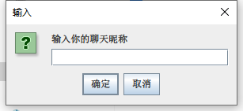
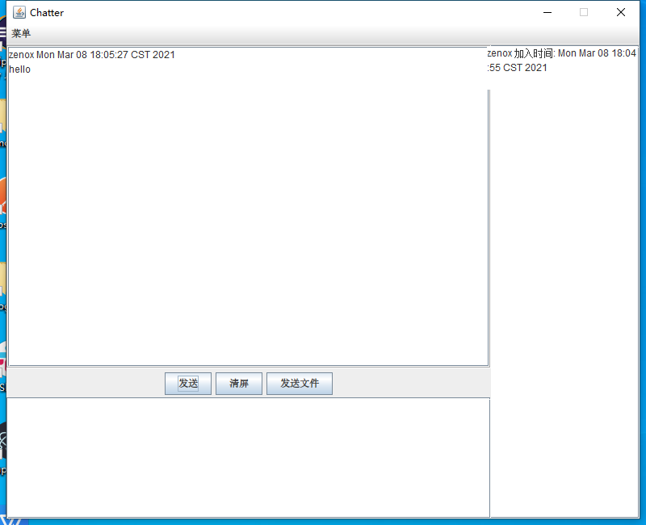
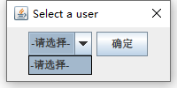
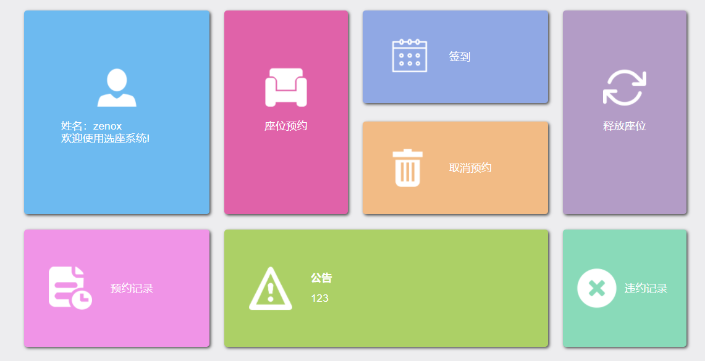
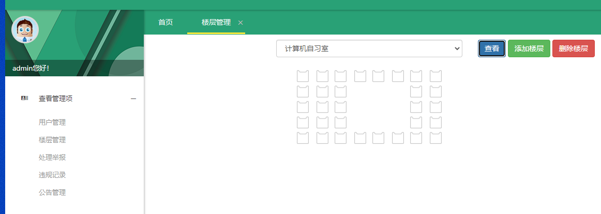
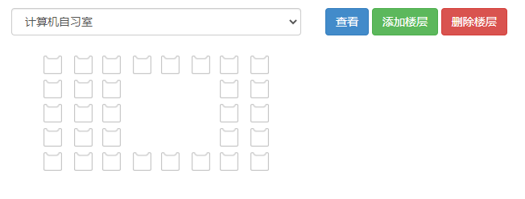

一些个人老项目的汇总
最近我往我的Github仓库上传了几个项目，都是之前学Java时做的小项目，虽然代码质量不高，但算是我学习Java路上几个不同阶段的标志吧，传到Github的目的是为了做一个历史代码的保存，毕竟Github相对于自己的硬盘来说还是相对稳定的。
基于Swing的局域网聊天软件
算是我做的第一个Java项目吧（如果那玩意能称为项目的话），实际上可以当作一个小Demo，当时学了Java的io、socket以后，迫切想要实践一下，那时候还不会做前端，所以用了我当时唯一会的客户端技术–Swing，就放两张图片感受一下。
打开软件要求输入聊天昵称

聊天界面

就这么简单，两张图就完全概括了这软件全部的功能。
- 右边这一列空白我称之为上下线通报，当局域网内有一台主机运行了这个jar包，会发一个广播消息，其他的客户端列表上会显示上线的用户。
- 中间三个按钮，发送消息也可以用CTRL+回车代替；清屏就是把消息列表清掉；发送文件这玩意我觉得反而是这demo的主要功能…
- 发送文件时，局域网内至少要有两个在线的用户，其中一个人选择发送文件。

由于我这边没有其他人在用，所以显示了个空白列表，操作也相当简单，当时还做了个进度条…那时候连MVC都没有学，我这套代码里的MVC是我自己脑补出来的…不过跟真正的MVC其实也是一个道理吧。
基于Servlet的个人网盘
学了JSP+Servlet那一套以后，突然想到做这个东西练手，界面就不放出来了，简直惨不忍睹…那时候还是初学网页这一套技术，连js都不会，让我写个html+css简直要我命，所以我就去网上到处找相关的页面，比如要做注册功能，就去网上找注册页面的模板，要做网盘主页，就去找开源的网盘系统，扒出里面的页面源码；总之到最后究竟缝合了多少个页面我自己都记不清了，现在也没法考究了。
主要功能的话就是注册->上传文件->下载文件，上传和下载用的是apache-commons那一套，专门做了个上传进度条，依稀记得用的是ajax，而且这ajax还是网上抄的…
总之最后做出来的东西就是可以用，但没必要用…
图书馆选座系统
这算是我学完SSM后做的第一个练手小项目，算是第一次实践了前后端分离吧，前端页面也是缝合怪，但样式相比个人网盘来说好了不少，放一张图感受一下。

总共两个模块，上图这个模块就是普通用户的选座模块，其实功能极其简单…

第二个模块就是管理模块，可以对各种数据进行管理，其实其他功能都是扯淡，也就楼层管理和选座是主要功能，然而也不是我自己做的…
其实这个选座模块的原理是这样的，有一个Floor表和一个Seat表，Floor表保存了这个楼层的座位的排数和列数，Seat表则保存一个座位的状态，一个座位有四个重要的属性：楼层号、排号、列号、选座状态，也就是说Floor对Seat表是一对多。
初始化选座页面的时候，列出所有可用楼层，点击查看后，根据楼层的排数、列数去初始化一个座位矩阵，然后根据每个座位的选座状态决定是否要显示、显示成什么样，总共就这几种状态：不可用、可选、已预约、已使用，不同状态图标都是不一样的。
可以在管理系统中添加新的楼层，初始化一个排数、列数，点击一下对应座位的图标，就可以把它禁用掉，以此达到自定义座位布局的效果。

后话
这几个项目当初写完其实就产生了重构的想法，然而最初写的时候根本都没用过版本管理，现在代码比较杂，尤其是那个Swing项目，代码已经乱到我看都不想看…与其重构，还不如重写来的方便。
这几个项目传到Github上的目的就是留一个怀念，以后想看看曾经写的项目，还可以下过来在本地玩玩。